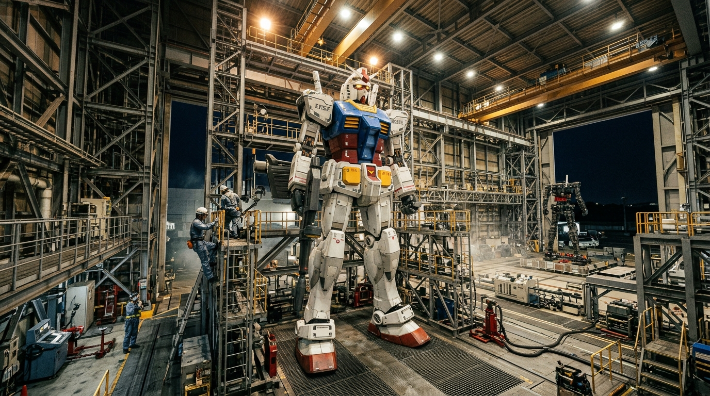

- 典藏代表機體
- 05 架
- 收錄紀元跨度
- U.C. 0079 – C.E. 71
- 機體全高區間
- 17.5 – 22.0 m
- 核融合爐出力峰值
- 8,826 kW
01. 機體檔案圖鑑
依陣營、紀元或關鍵字篩選機體，點擊任一檔案可檢視詳細武裝配置並加入規格對比。
找不到符合條件的機體檔案
請嘗試更換紀元分類，或清除搜尋關鍵字以顯示全部典藏機體。
02. 機體性能對比實驗室
選取兩款不同世代的機動戰士，即時對照動力出力、推力重量比與裝甲設計差異。
03. 動力與武裝系統解析
從米諾夫斯基粒子物理學到精神感應架構，解構支撐機動戰士作戰效能的四大關鍵技術。
04. 宇宙世紀與鋼彈發展編年史
追溯機動戰士從雙足步兵載具演進為精神感應兵器的歷史關鍵節點。